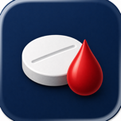

Privacy is the default
Health records should not become someone else’s advertising fuel. INR Mate is designed around user-controlled records.
small apps · real routines · no nonsense
oddfruit is a tiny independent studio making calm, practical Apple apps. The first release is INR Mate, built from lived experience of warfarin, clinical work and the desire for clearer everyday records.
not a faceless app cupboard
oddfruit exists to make software that feels useful, calm and human. No tracking theatre, no feature confetti, no pretending that every problem needs a dashboard shaped like a spaceship. Just carefully made apps that help people keep track of things that matter.
available now

A private INR and warfarin tracker for logging results, recording doses, setting reminders, reviewing trends and exporting appointment-ready records.
Learn more →Health records should not become someone else’s advertising fuel. INR Mate is designed around user-controlled records.
The best screen is the one that helps you understand what to do next, without making you squint at a digital tax return.
Real routines are messy. Our apps aim to be steady, readable and useful when life is not behaving like a brochure.